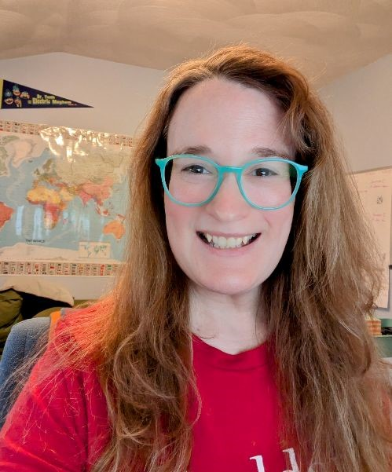

Homeschooling for College-Prep - Part 2
Earning Credit Early
by Erin Cyr
In Part 1, Erin looked at your role as the guidance counselor as your child prepares for college. This time, they share with us how their child earned college credit early to save money in the long run.
Lots of homeschooling families have one breadwinning parent or one who works full-time while the other works part-time. We need to save on college wherever we can! For my homeschooler, the goal has been to get an excellent education through college without getting stuck with insurmountable debt after graduation.
Taking CLEP tests and cheap and/or free dual enrollment (DE) courses will save money and time for your student. I will explain about the savings, but first, let’s talk about time. The first two years of college are filled with general education requirements that help colleges churn out well-rounded students who have a basic knowledge of a variety of subjects. These classes usually aren’t for any specific major and are very introductory, giving students a chance to try a little bit of everything. General Education courses add up to about 34-35 college credits. Getting some of those classes crossed off your student’s list before they even start college is a great way to get them to the courses for their major and minor. For my daughter, this means she can follow her passions sooner. As I said before, my student drives this train, and I’m here to provide support and offer ideas for how she can meet her goals. She has created a timeline and I have supported her progress towards college.
So, back to the money . . . CLEP and DE courses will save you college tuition money in the end, as long as your student is taking tests and classes that their eventual college will accept. I am going to use Salem State University as an example because it is local to me and local students can get free DE courses and pay in-state tuition. The prices per credit will probably change a bit over the next few years, but a rough estimation is all that we need.
Some of the least expensive majors at many colleges are History and English; prices go up when you add differential fees like labs for sciences, supply fees for art, etc. I am going to use the numbers for an English major commuting to Salem State, but colleges usually list their tuition and fees on their websites.
As of the fall 2025 semester, Salem State charges about $514 per credit, including some fees. An English major will need 120 credits for the BA program (and an additional 30-33 to obtain an MA, but let’s not get ahead of ourselves!). A commuter student walking into SSU from high school will pay $61,680 for those credits. That’s A LOT of money for what is generally considered an affordable state school.
Using my student as an example, I’m going to show how taking some CLEP tests and DE classes during high school will save tuition money later. Starting with the 38 college credits that she plans to earn during high school means that we can take $19,532 off that bill, leaving $42,148 to have to pay. I will help her to apply to as many scholarships as possible to defray the cost. It’s also good to keep in mind that state schools give little to no merit aid right now, so a state school might not be the best savings for your student. (Summer and evening classes at SSU are less expensive courses for the same number of credits, so maybe my child could end up taking one or two per summer, maybe not. But with summer classes priced at $385 per credit versus $514, it might be worth it to her to save where she can.)
We will have paid about $510 total for the 38 credits my student plans to earn ahead of going to college. So far, we have found textbooks online for free and paid for one for her American Sign Language course that she will use for all four classes in the series. I’m not sure how many others we will have to buy before she starts college, but I am hoping that we will be able to buy them used or find them for free (so many textbooks are available for download these days!).
Our goal as homeschooling parents has been to allow our child to find her passions and follow them. For this child that means college and we don’t want to saddle her with debt that clips her early adulthood wings.
One thing I haven’t touched on is the fact that Massachusetts community colleges will be free for high school graduates. This is past the homeschooling phase, so I didn’t mention it, but it is certainly a huge cost-cutting measure if you have a student who wants to get an associate's, bachelor’s, or master’s degree.
Have you heard of CLEP tests?
College-Level Examination Program tests, or CLEP tests, allow your student to study for and take a test that gives them college credit. They can then “skip” that class in college. Colleges decide whether they will accept CLEP and for what classes. Some colleges may list the CLEP they accept on their website. Salem State University has this list (CLEP is listed under the AP they accept).
So, if you have a short (or long) list of schools your student may be interested in, you can cross-reference those lists to see if there are some CLEP tests they might want to take so they don’t have to take those classes in college (saving time and money!)
CLEP tests cost $85, but if your student takes a free online course through Modern States on that CLEP test subject, they will receive a voucher that makes the test FREE! There are nearby testing centers at community colleges. If your student does not get a passing grade on the CLEP test they can try again after three months. You can implement CLEP into your homeschooling, or it can be an independent project for your student. My daughter took the Biology CLEP test. Biology was a part of their grade 10 coursework, so we used the CLEP test as a final exam.
In addition to the courses on Modern States, students can prepare for CLEP tests in lots of ways. One of the best resources I found was the CLEP Reddit, where folks who have taken the tests post about what materials they used to study and pass the tests. My daughter used video series on YouTube, such as Crash Course and The Amoeba Sisters, websites like Quizlet, some REA books we bought, and the high school Biology course on CK-12. My daughter got a 66 out of 80 on her Biology CLEP (a score of 50 is passing). At Salem State, passing the Biology CLEP is an equivalent to the courses BIO121 and BIO122. Those courses would cost about $4,112 for the two four-credit Biology classes. Plus, there’s the time commitment of being in two semester-long classes with labs. Spending a little time studying for a CLEP test during 10th grade means more time for college classes she is passionate about, and the savings amount to quite a bit!
What is Dual Enrollment, and how can homeschoolers use it on their path to college?
Dual enrollment (often written as DE on websites and social media) is when a student takes college classes and receives BOTH high school and college credits for those courses. These classes are real college courses and, while most are at an introductory level, you can expect them to have the academic rigor of that college.
Many colleges have a dual enrollment department (sometimes called early college) and offer online courses, some are in-person. So, how do you know which of the thousands of colleges in the US offer DE and which would be right for your child? Well, there’s a non-profit that does exactly that. Homeschooling For College Credit has a database of available classes and can help you find exactly what your student needs. Some classes are FREE, some are heavily discounted, and some are full price and the same per-credit tuition your student would pay if they were fully enrolled.
Colleges might offer the first class for free, or you may have to live in a certain region to be able to participate in their DE classes. Additionally, your student may only have a few classes available to them as part of the college’s DE program, but there are so many institutions that offer DE, you are bound to find a few that will work.
Here’s how we have been using DE to complement our homeschooling: In May of 2024 my daughter took General Psychology at California Baptist University (the first class there is free). The class was 100% online, asynchronous, and was eight weeks long. It was definitely a real college course, with lots of reading, annotating, papers, and presentations. My daughter loved it, worked super hard, and got an A. She earned her first three college credits to send in a transcript to her future school and can check off a class that is normally taken by college students in their first or second years.
In fall and spring of this school year, she took a speech course and Introduction to Women’s and Gender Studies at Salem State University. Salem State offers one free class per semester to students living in area cities and towns (there is a list on their website). She will continue to take one class there each semester until she graduates high school, which will end up being four free classes and 12 college credits. Salem State is one of the colleges that has its own DE department.
My daughter decided that she wanted to take ASL as her world language and has been taking a four-course accelerated series of American Sign Language at Pierpont Community and Technical College. This school is in West Virginia and offers its ASL program 100% online. When she finishes these four courses in two semesters, she will have taken care of all of her world language requirements for both high school and college at $25 per credit. (UPDATE: As of last semester, they are now $60 per credit, which is still a lot less than many other DE schools.) It’s such a good value!
My daughter is also taking a dual enrollment math course online through the Universal Learner program at Arizona State University. This program is unique in that the student pays $25 to enroll in the course, completes the work, and then can choose if they want the course to appear on their transcript. If the student does well, they pay $400 to add the completed course to their transcript. If they decide they don’t want this class on their transcript, then they don’t pay. It’s a great way to allow students to try a college course and not have it hurt their transcript.
So, if she finishes all of these classes successfully and combined with her CLEP credits, my daughter will be going into college with 38 credits under her belt. Plus, DE looks great on a high school transcript. It shows prospective colleges that your student can already do well in college-level courses and that they are committed to their educational plans.
|  | Erin lives in Salem, MA, and homeschools their 16-year-old daughter, who will graduate in spring 2026. They are the founder and administrator of the Salem Homeschooling Association and serve as AHEM's Town Point Person for Salem. Erin has thoroughly enjoyed homeschooling and they are deeply grateful for the many lessons, people, and fun it has brought into their family's life. |